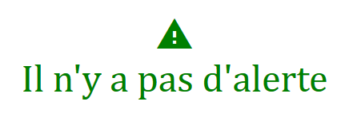

Pendant mon année de terminale j'ai réalisé, avec deux collègues, un projet pour ma spécialité I.S.N (Informatique et Sciences du Numérique)
Nous avons débuté ce projet fin mars 2016 et nous l'avons présenté à la fin du mois de mai 2016.
Notre projet était un jeu de type Snake, Nous l'avons réalisé avec le langage de programmation Python, appris pendant les cours d'I.S.N.
Nous avons aussi utilisé l'interface graphique Tkinter, notamment pour réaliser le menu de notre jeu.
Le principe du jeu Snake est de faire grandir le plus possible le serpent en le dirigeant vers des "fruits" ou autre.
Voici une image de notre jeu en pleine partie :
Vous pouvez trouver dans ce fichier pdf (cliquez) le dossier que j'ai réalisé pour ce projet.
Ici vous avez accès au code source du projet.
Lors de ma première année de D.U.T informatique, j'ai réalisé, avec un camarade, un projet pour le module 1.1 de la matière APL (Application Programmation Langages).
Ce projet à débuté en mi-novembre 2016 et c'est terminé un mois plus tard. Ce projet était un jeu de type Blocus.
Il a été réalisé dans le langage C. Nous avons utilisé la bibliothèque graphique de l'I.U.T de Fontainebleau.
Le jeu Blocus se joue à deux joueurs. Il existe un mode solo et un mode deux joueurs.
Le principe du jeu Blocus est d'être le dernier joueur à pouvoir se déplacer sur une case situé en haut, à gauche, à droite ou en bas du joueur.
Chaque joueur doit bloquer l'autre avec ses propres obstacles.
Voici une image de notre jeu en pleine partie :
Vous pouvez trouver dans ce fichier pdf (cliquez) le dossier que nous avons réalisé pour ce projet.
Le deuxième projet de ma première année en D.U.T informatique est un autre jeu réalisé pendant le deuxième semestre.
Ce projet était un jeu de type Same Game à faire en binôme.
Il a été réalisé dans le langage Java
Le principe du jeu Same Game est d'obtenir le plus de point en supprimant des blocs d'objets de la même couleur. Un bloc d'objets est un groupe qui contient au minimum deux boules de la même couleurs.
Plus le nombre d'objet dans un bloc supprimé sera grands, plus le nombre de points obtenu par le joueur sera élevé.
Voici une image de notre jeu en pleine partie :
Vous pouvez trouver dans ce fichier pdf (cliquez) le dossier que nous avons réalisé pour ce projet.
En deuxième année pour mettre en pratique ce que nous avons appris sur l'Interface Homme Machine, nous avons eu pour projet de réaliser une application qui permet de gérer les clients d'un hôtel (fictif).
Pour ce projet nous avons utilisé le langage Java ainsi que SQL grâce au système de gestion de base de donnée MariaDB
Le but de cette application est d'abord d'avoir une interface d'utilisation soigné, agréable et simple d'utilisation.
L'utilisateur peut revenir en arrière à tout moment
Le but principal est qu'il peut choisir une chambre qui coresponde à ses critères.
Voici deux images de notre application :
Vous pouvez trouver dans ce fichier pdf (cliquez) le dossier que nous avons réalisé pour ce projet.
Enfin, la majeure partie de notre deuxième année de D.U.T Informatique à été consacrée à la réalisation de notre projet tuteuré.
Pour ce projet, nous avions le choix du sujet et de la création de notre équipe. Dans mon groupe nous étions 4 personnes et nous avions choisi comme sujet la surveillance d'un parc informatique. Le nom de notre projet est : AdminEasy
Ce projet est composé de trois éléments : Une interface web, un client et un serveur.
Parmis les membres du groupe, nous nous sommes réparties le travail de la façon suivante : Une personne c'est chargé du client, une autre du serveur et deux personnes ce sont chargé de l'interface web.
Pour ma part, je me suis occupé de l'interface web, avec une autre personne.
Notre interface web à pour but de lier les informations récupérées par le serveur et le client, qui sont transmises à deux bases de données différentes : Une base de données Postgre et Influx DB
Voici trois images de notre application :
Vous pouvez trouver dans ce fichier pdf (cliquez) le dossier que nous avons réalisé pour ce projet.
Vous avez accès ici à un site internet qui regroupe toutes les informations relatives au projet.